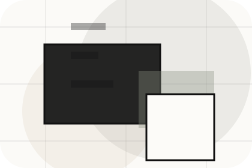
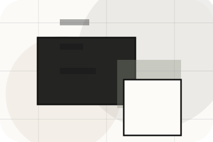
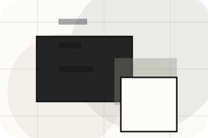
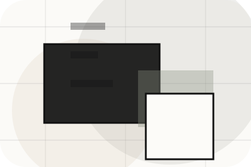
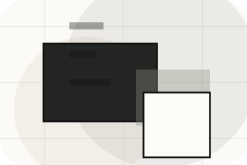
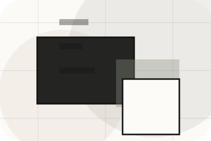

Agency
Open the agency route for market, team, values so real estate, property & land services visitors can compare context, proof, and next steps.
Open AgencyHome / 01
Home opens as a clear real estate decision hub: what Urban offers, who it helps, why it matters, and which route to take first.
The first screen combines positioning, proof, primary action, and fast internal navigation, so people can act immediately or compare the rest of the home route with context.
Architectural listing hero
Select the closest route and Urban keeps the next step, proof, and follow-up expectation aligned with market confidence and discovery.

Site atlas
This homepage is the working index for real estate, property & land services: it explains the offer, points to every deeper page, and keeps the final action visible without making the visitor hunt.
A real-estate editorial site with architecture-led listings, sparse navigation, area guides, and valuation flow. The page links problem, promise, services, process, proof, questions, support, legal routes, and conversion paths into one clear decision map.
Open the agency route for market, team, values so real estate, property & land services visitors can compare context, proof, and next steps.
Open AgencyOpen the properties route for search, featured, filters so real estate, property & land services visitors can compare context, proof, and next steps.
Open PropertiesOpen the services route for sales, lettings, management so real estate, property & land services visitors can compare context, proof, and next steps.
Open ServicesOpen the areas route for locations, neighbourhoods, prices so real estate, property & land services visitors can compare context, proof, and next steps.
Open AreasOpen the process route for valuation, marketing, viewings so real estate, property & land services visitors can compare context, proof, and next steps.
Open ProcessOpen the pricing route for fees, commission, management so real estate, property & land services visitors can compare context, proof, and next steps.
Open PricingOpen the resources route for buyers, sellers, landlords so real estate, property & land services visitors can compare context, proof, and next steps.
Open ResourcesOpen the questions route for buying, selling, renting so real estate, property & land services visitors can compare context, proof, and next steps.
Open QuestionsOpen the contact route for viewings, valuation, phone so real estate, property & land services visitors can compare context, proof, and next steps.
Open ContactReview the local assets, icons, OG images, and static handoff materials used by Urban.
Open Asset SystemUse the full sitemap to recover any route and verify the whole Urban structure.
Open SitemapRead the privacy route before sending personal details through the static form.
Open PrivacyManage consent and understand the privacy-safe analytics approach.
Open CookiesHome / 02
Goal adds professional context to the home route, using the minimal property journal structure to support market confidence and discovery before visitors choose a next step.
Urban uses thin-rule listing cards and focused copy to make the decision easier to scan, aligning the section with market confidence and discovery rather than filling space.
Open AgencyUrban structures goal around context, judgment, and a clear next route so visitors can compare the block quickly before they get a valuation.
Get ValuationHome / 04
Featured adds professional context to the home route, using the minimal property journal structure to support market confidence and discovery before visitors choose a next step.
Urban uses thin-rule listing cards and focused copy to make the decision easier to scan, aligning the section with market confidence and discovery rather than filling space.
Open ServicesFeatured gives the page a specific angle instead of repeating the navigation label.
The thin-rule listing cards show what to compare, what to avoid, and what matters most for real estate, property & land services visitors.

The final cue points to a useful internal route so the section keeps the journey moving.
Home / 05
Services explains the practical scope, best-fit situations, and expected outcome so real estate visitors can compare options without decoding jargon.
The section keeps the offer concrete: what is included, who it is best for, what decision it supports, and which linked route gives the deeper detail.
Open ServicesWho should use services and when it belongs in the home journey.
The practical benefit visitors should expect after choosing this route.

Where to compare details, pricing, support, or contact options before committing.
Architectural listing hero
Select the closest route and Urban keeps the next step, proof, and follow-up expectation aligned with market confidence and discovery.
Home / 06
Areas adds professional context to the home route, using the minimal property journal structure to support market confidence and discovery before visitors choose a next step.
Urban uses thin-rule listing cards and focused copy to make the decision easier to scan, aligning the section with market confidence and discovery rather than filling space.
Open ProcessAreas gives the page a specific angle instead of repeating the navigation label.
The thin-rule listing cards show what to compare, what to avoid, and what matters most for real estate, property & land services visitors.
The final cue points to a useful internal route so the section keeps the journey moving.
Home / 07
Proof shows what changes after the work: clearer decisions, visible progress, and proof points that connect the offer to real outcomes.
The layout connects before-and-after thinking with measured outcomes, making the result easy to scan without promising what the business cannot guarantee.
Open PricingThe uncertainty, delay, or missed opportunity visitors bring into proof.
The clearer, safer, or more valuable state Urban is designed to support.
The visible cue that connects proof to a believable decision, not a loose claim.
Home / 08
Reviews converts customer proof into a useful buying signal: the problem, the experience, and what changed afterward.
Proof stays believable by focusing on situation, service experience, and practical change rather than vague praise or unsupported results.
Open Resources

What the visitor needed before choosing Urban, written with enough context to feel real.
Home / 09
Questions handles buying doubts directly so visitors can understand timing, fit, limits, and the safest next step.
Answers are short by design: enough to remove hesitation, not so much that the page turns into documentation before the visitor can act.
Open ContactQuestions gives the page a specific angle instead of repeating the navigation label.

The thin-rule listing cards show what to compare, what to avoid, and what matters most for real estate, property & land services visitors.

The final cue points to a useful internal route so the section keeps the journey moving.
Urban starts with a focused intake so the recommendation matches the visitor's context, risk, timing, and readiness.
Each route explains inclusions, exclusions, documents, timing, and the decision points that affect final delivery.
The theme uses minimal property journal, thin-rule listing cards, and property filter, gallery modal, map-style area cards rather than a shared template rhythm.
Architectural listing hero
Select the closest route and Urban keeps the next step, proof, and follow-up expectation aligned with market confidence and discovery.
Information is provided for planning and should be reviewed for the final client, location, and operating rules.
Home / 10
Urban closes the home route with a clear action, a quick reminder of the value, and a low-friction way to get a valuation.
Visitors who are ready can use the primary action. Visitors who are still comparing can scan the section links, proof, and support routes before they get a valuation.
Get ValuationThe final block keeps the choice simple: act now, compare one more proof route, or send enough detail for a focused response.
Get Valuationmarket confidence and discovery
A real-estate editorial site with architecture-led listings, sparse navigation, area guides, and valuation flow. Home ends with a direct path to get a valuation, plus enough context for visitors who still need to compare.
 Get Valuation
Get Valuation